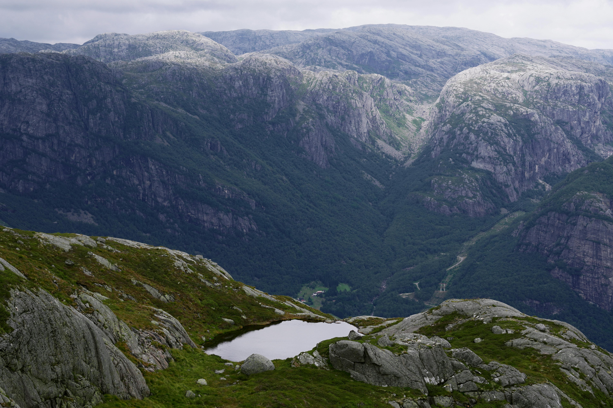
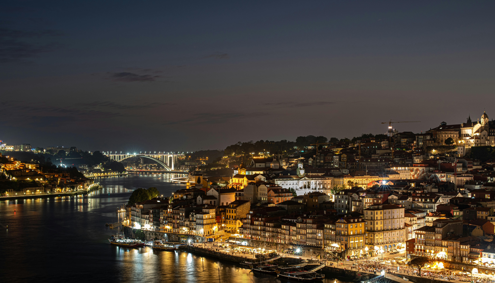

A Beleza e a História do Turismo na Europa
A Europa é muito mais do que seus destinos mais famosos. É um
continente onde a história não está apenas em museus, mas nas ruas
de paralelepípedos, nas fachadas de edifícios centenários e nas
pontes que testemunharam séculos de transformação. Do sol vibrante
do Mediterrâneo à elegância fria do norte, o turismo na Europa é
uma experiência de imersão completa.
Neste continente, cada país, e muitas vezes cada cidade, oferece
uma identidade única. Você pode explorar a rica herança artística
da Itália, caminhar pelas florestas e castelos da Alemanha, ou se
perder na vida noturna vibrante de Madri. A diversidade é a chave:
as paisagens mudam de montanhas cobertas de neve para praias de
águas cristalinas em poucas horas de viagem.

Os Sabores e as Paisagens da Europa
Viajar pela Europa é uma jornada que encanta não apenas os olhos,
mas também o paladar. O continente se revela em paisagens de tirar
o fôlego, de campos de lavanda na Provença francesa a fiordes
majestosos na Noruega. Cada cenário é um convite para explorar e
se maravilhar.Mas a viagem não estaria completa sem a sua rica e
diversificada gastronomia. A culinária europeia é um reflexo de
sua história e cultura. Em cada destino, uma nova descoberta
aguarda: o sabor autêntico de uma massa fresca na Itália, a
complexidade de um prato de paella na Espanha ou a simplicidade
deliciosa de um queijo e vinho na França
Das pitorescas vilas de pescadores às grandes capitais, a Europa oferece uma tapeçaria de sabores e cores. É a chance de viver experiências únicas, de um piquenique à beira do Sena a um jantar em uma taverna grega, enquanto as paisagens e os sabores se misturam em memórias inesquecíveis.
Europa: Uma Jornada por Cultura e Gastronomia
O turismo na Europa é uma experiência que se traduz em uma imersão completa em cultura e gastronomia. A cada esquina, um novo capítulo da história se revela, seja nas ruínas de um império romano, nos castelos medievais da Alemanha ou nas galerias de arte que abrigam obras-primas de séculos.
Mas a viagem não se completa sem a sua culinária. A gastronomia europeia é um reflexo direto da identidade de cada região. De um prato de tapas em Madri a um croissant recém-assado em Paris, cada sabor é uma ponte para a história e os costumes locais.
A jornada pela Europa é um convite para os sentidos. É a chance de viver a efervescência cultural de suas capitais, como Londres e Berlim, enquanto se delicia com as tradições culinárias que tornam cada destino uma experiência única e inesquecível. Viajar é, acima de tudo, uma oportunidade de criar suas próprias histórias, se conectar com diferentes culturas e voltar para casa com uma bagagem cheia de memórias e sabores autênticos.
Descubra a Europa: Viajar Além dos Clássicos
Enquanto as grandes capitais europeias, como Paris e Roma, continuam a ser paradas obrigatórias, a verdadeira essência da Europa se revela nas suas joias escondidas. Ir além dos destinos clássicos é uma oportunidade de encontrar a autenticidade e a tranquilidade que muitas vezes se perdem nas multidões.
Das pequenas vilas medievais da Toscana, na Itália, às paisagens dramáticas da Costa Amalfitana, há um mundo de experiências a serem descobertas. Mergulhe na história das cidades menos conhecidas da Espanha, explore os mercados de rua de Lisboa e se perca nas paisagens naturais da Escócia ou da Islândia, longe dos roteiros tradicionais.
Esta é a chance de criar uma jornada mais pessoal e memorável. É sobre encontrar aquela cafeteria local em uma rua secundária, descobrir uma galeria de arte de um artista local ou caminhar por trilhas que levam a vistas espetaculares. Viajar pela Europa é um convite para ir além do óbvio, e descobrir um continente que continua a surpreender.